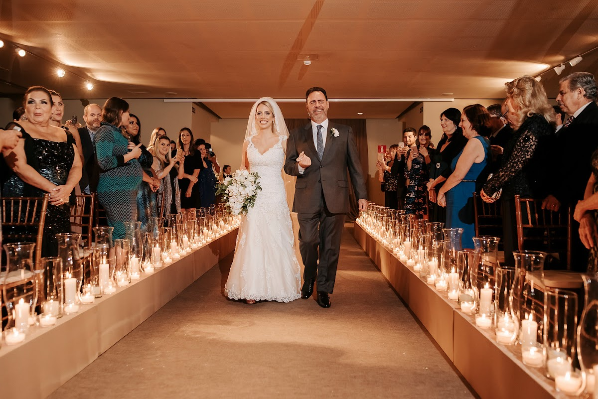
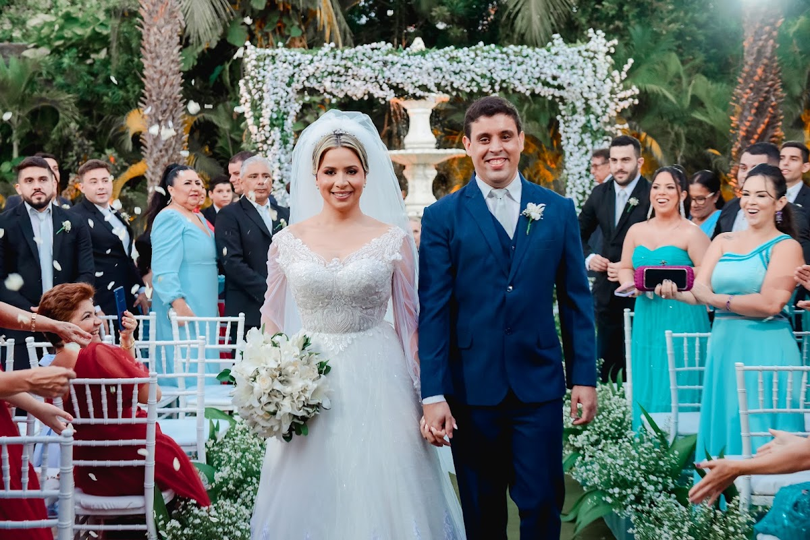
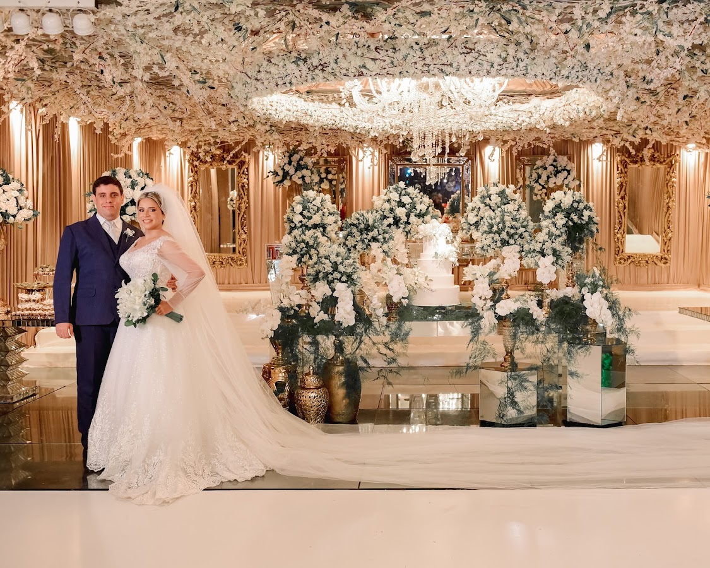
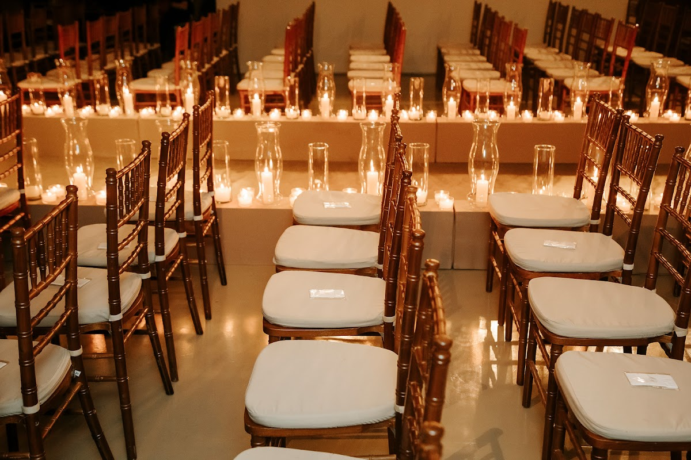
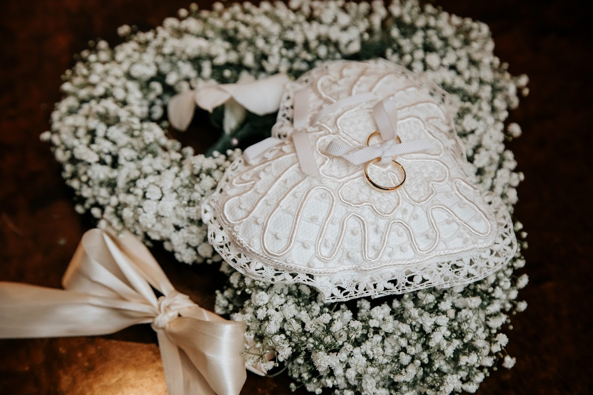
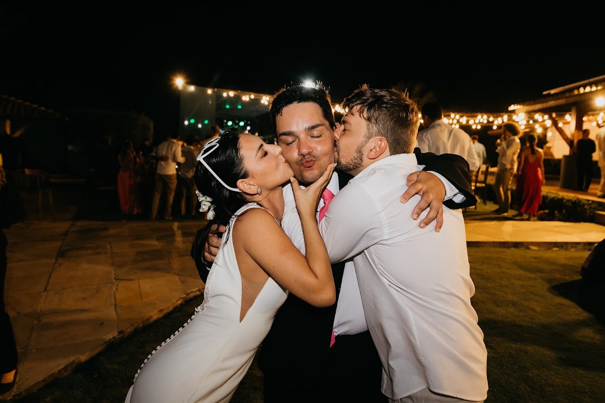
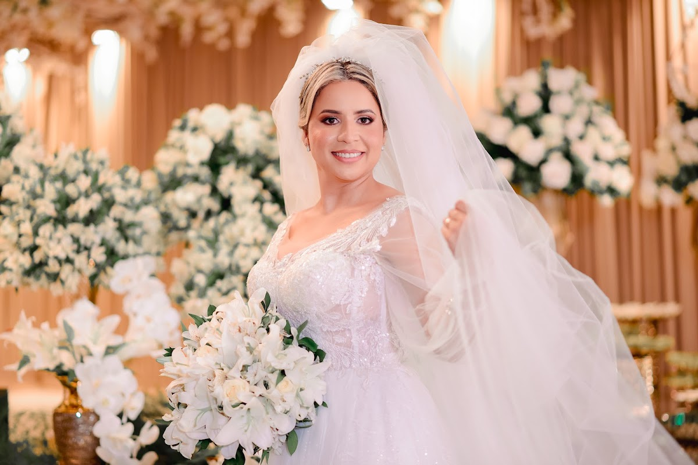

“A melhor escolha do meu casamento.”
É o que repetem as noivas que tiveram o Oscar Matos ao lado.
Do primeiro encontro ao fim da festa, o Oscar acompanha tudo de perto: reuniões, detalhes, fornecedores e até aquelas conversas delicadas com a família. No dia, ele chega com a equipe para vocês só viverem o momento.


Um cerimonialista que caminha junto com os noivos.
O Oscar Matos é cerimonialista e produtor de casamentos em Fortaleza. O trabalho começa bem antes da festa: ele participa das reuniões, ajuda a definir cada detalhe e dá direção quando surgem dúvidas.
Quem já casou com ele fala da paciência, da dedicação e de um talento especial para conduzir as situações de família com leveza. No grande dia, o Oscar está à frente da equipe para que tudo aconteça como foi sonhado.
De perto, em cada etapa.
Nada de aparecer só no dia. O acompanhamento é próximo do começo ao fim, para o casamento ser leve também nos preparativos.
Reuniões
Ele acompanha os noivos nas conversas com fornecedores e ajuda a tomar cada decisão com segurança.
Detalhes
Do roteiro da cerimônia ao cronograma da festa, cada detalhe é definido junto com vocês.
Família
Orientação para conduzir com calma as questões familiares que todo casamento tem.
O grande dia
Com a equipe, o Oscar conduz a cerimônia, a festa e o pós-festa para vocês aproveitarem.
Casamentos com o Oscar
Mais no Instagram @oscarmatoscerimonial →




O Oscar foi com certeza a melhor escolha que fiz em meu casamento. Ele me acompanhou nas reuniões, me ajudou a definir detalhes… Me fez enxergar as melhores formas de conduzir possíveis problemas familiares (rs).Angélica Sugarava Brandi · Google
“A escolha mais certeira do meu casamento. Oscar foi fundamental para que tudo saísse conforme sempre sonhei. Dedicado, paciente, acompanhou tudo de perto.”
Marcela NapoleãoAvaliação no Google“Fornecedor que levo pra vida!!! … deixaram todos os preparativos, a festa e o pós-festa muito mais leves.”
Karine ChavesAvaliação no Google“Profissional atencioso, dedicado e comprometido com a entrega.”
O que os clientes destacamResumo das avaliações no GooglePor onde começar?
Responda cinco perguntas rápidas e veja um cronograma sugerido para o seu casamento. No final, suas respostas seguem organizadas para o WhatsApp do Oscar.
- Leva menos de um minuto
- Mostra o que priorizar agora
- Você só envia se quiser
Vamos conversar sobre o seu dia?
Conte a data, o local e o que mais preocupa. O Oscar responde pelo WhatsApp.